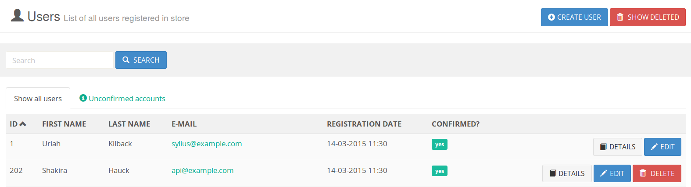
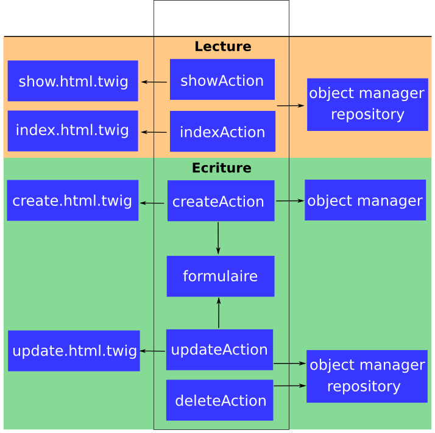

Développer avec le SyliusResourceBundle
Qui suis-je ?
Arnaud Langlade (@_aRn0D)
Développeur Symfony chez Clever Age
www.clever-age.com / @CleverAge

Sylius

Framework E-commerce créé par Paweł Jędrzejewski
Ensemble de bundles Symfony et composants PHP e-commerce
Sylius Starndard Edition
Quelques chiffres : ~200 contributeurs / ~1700 stars
SyliusResourceBundle
Le SyliusResourceBundle vous permet de gérer rapidement et simplement vos ressources et de les exposer via API REST.
Il n'y a pas que des composants e-commerce dans Sylius !
Gestion des ressources? Z'avez dis CRUD?
 CRUD = Create, Read, Update, Delete
Un CRUD, comment ça fonctionne?

Pourquoi la création de ce bundle?
- Le back office de Sylius est composé d'énormement de CRUDs
- Eviter la duplication de code parce que c'est mal!
- Développer plus vite en automatisant des tâches
Une solution? ResourceController?
- C'est un contrôleur générique
- Plus de code, il est intialisé via une configuration
- Il étend the FOSRestController
- Il permet de personnaliser les actions
- Solution plus flexible
Création du ResourceController :
Utilisation du EventDispatcher (répartiteur d'évènement) :
Quels sont ORM/ODM supportés ?
- Doctrine ORM : Sylius l'utilise par défaut
- Doctrine Phpcr-ODM : Sylius intègre le CMF pour gérer des contenus
- Doctrine Mongodb-ODM
- Bientôt sûrement plus !
Attention!
Ce n'est pas un admin generator!
Il faut créer vos formulaires, vos templates et le routing (pour le moment!)
Créer son CRUD en quelques minutes !
Par exemple, créons un CRUD pour gérer des clients (customer).
Configurons nos ressources
sylius_resource:
resources:
myapp.customer:
driver: doctrine/orm
classes:
model: AppBundle\Entity\Customer
repository: Sylius\Bundle\ResourceBundle\Doctrine\ORM\EntityRepository
templates: WebBundle:Backend/Customer
myapp.address:
# ...
Mais que se passe t'il ?
$ php app/console container:debug | grep customer
myapp.manager.customer alias for "doctrine.orm.default_entity_manager"
myapp.controller.customer container Sylius\Bundle\ResourceBundle\Controller\ResourceController
myapp.repository.customer container Sylius\Bundle\ResourceBundle\Doctrine\ORM\EntityRepository
$ php app/console container:debug --parameters
sylius.config.classes {"myapp.customer": {...}}
Configurons nos ressources
sylius_resource:
resources:
myapp.customer:
driver: doctrine/orm
classes:
model: AppBundle\Entity\Customer
controller: AppBundle\Controller\CustomerController
repository: AppBundle\Repository\CustomerRepository
templates: WebBundle:Backend/Customer
Créons notre modèle
# AppBundle\Entity\Customer.php;
/**
* @ORM\Entity
* @ORM\Table(name="customer")
*/
class Customer
{
/**
* @ORM\Column(type="string", length=100)
*/
protected $firstName;
/**
* @ORM\Column(type="string", length=100)
*/
protected $lastName;
}
Créons notre formulaire
// AppBundle\Form\Type\CustomerType.php;
class CustomerType extends AbstractResourceType
{
public function getName()
{
return 'myapp_customer';
}
}
- Le formulaire doit être défini en tant que service
- Pattern du nom de formulaire : nom-application_resource
- AbstractResourceType permet de configurer le data_class et le validation_group
Créons nos templates
{# create.html.twig ou update.html.twig #}
{# show.html.twig #}
{{ customer.firstname }}
{{ customer.lastname }}
{# index.html.twig #}
{% for customer in customers %}
{{ customer.fistname }} {{ customer.lastname }}
{% endfor %}
Configurons nos routes
# app/routing.yml
myapp_customer_index:
pattern: /customer
defaults:
_controller: myapp.controller.customer:indexAction
- Pattern des clés des routes : nom-application_resource_action
- Ne pas oublier que les contrôleurs sont définis en tant que service
- Actions : index, show, create, update, delete, moveUp, moveDown, revert ou updateState
Et paf ! ça fait des Chocapics !
Notre CRUD est prêt à l'emploi !! On crée notre API ?
Exposer ses clients via API REST
Configurer le FOSRestBundle
# app/config.yml
fos_rest:
format_listener:
rules:
- { path: '^/', priorities: ['html', 'json'], fallback_format: html}
Le ResourceController retourne le données dans le format souhaité
GET /customer/57 HTTP/1.1
Host: myshop.com
Accept: application/json
Configurer le sérialiseur
# Resources/config/serializer/Entity.Customer.yml
AppBundle\Entity\Customer:
exclusion_policy: ALL
properties:
firstName:
expose: true
type: string
lastName:
expose: true
type: string
relations:
- rel: address
href:
route: myapp_address_show
parameters:
id: expr(object.getAddress().getId())
HTTP/1.1 200 OK
Content-Type: application/json;
{
"id": 2,
"firstName": "Arnaud",
"lastName": "Langlade",
"_links": {
"self": {
"href": "/address/2"
}
}
}
C'est Tout ?
- Lionframe (Rapid RESTful API Development)
- Génération automatique des formulaires et du routing
Plus de flexibilité ?
Le comportement des méthodes du ResourceController est configurable
Configurer les methodes du ResourceController
Ajouter une entrée _sylius dans le tableau defaults des routes
# app/routing.yml
myapp_customer_create:
defaults:
_sylius:
template: WebBundle:Backend/Customer:custom_create.html.twig
Rédiriger l'utilisateur
# app/routing.yml
myapp_product_create:
pattern: /new
methods: [GET, POST]
_controller: myapp.controller.product:createAction
_sylius:
redirect: myapp_product_index
# Ou
redirect:
route: myapp_product_show
parameters: { name: resource.sku }
Récupérer des données dans la BDD
# app/routing.yml
myapp_customer_index:
pattern: /
methods: [GET]
defaults:
_controller: myapp.controller.customer:indexAction
_sylius:
# $repository->findBy(["group" => 'my_group'])
criteria:
group: my_group
# $request->get('criteria')
filterable: true
Récupérer des données dans la BDD
# app/routing.yml
myapp_customer_index:
pattern: /
methods: [GET]
defaults:
_controller: myapp.controller.customer:indexAction
_sylius:
# $repository->findByFilter($request->get('filter'))
repository:
method: findByFilter
arguments: [$filter]
Lister ses ressources
# app/routing.yml
myapp_customer_index:
pattern: /
methods: [GET]
defaults:
_controller: myapp.controller.customer:indexAction
_sylius:
# Trie
sorting:
updatedAt: desc # Ou asc
# $request->get('sorting');
sortable: true
# Paginate
paginate: 50
Moteur d'expression
# app/routing.yml
myapp_order_index:
path: /orders
methods: [GET]
defaults:
_controller: app.controller.order:indexAction
_sylius:
repository:
# $repository->findOrderByCustomer([$customer]);
method: findOrderByCustomer
arguments: ["expr:service('security.context').getToken().getUser()"]
Vous voulez mutualiser votre code ?
Sylius fonctionne avec des bundles
- Ils doivent être facilement étendables
- Ils peuvent supporter plusieurs "drivers" (ORM/ODM)
- Ils ne doivent être couplés les uns aux autres
La configuration sémantique
customer_bundle:
driver: doctrine/orm
templates:
customer: CustomerBundle:Backend/Customer
address: ...
validation_groups:
customer: [myapp]
address: ...
classes:
customer:
model: Myapp\CustomerBundle\Model\Customer
controller: Sylius\Bundle\ResourceBundle\Controller\ResourceController
repository: Sylius\Bundle\ResourceBundle\Doctrine\ORM\EntityRepository
form:
default: Myapp\CustomerBundle\Form\Type\CustomerType
choice: Myapp\CustomerBundle\Form\Type\CustomerChoiceType
address: ...
Mais que se passe t'il?
$ php app/console container:debug | grep customer
myapp.controller.customer container Sylius\Bundle\ResourceBundle\Controller\ResourceController
myapp.manager.customer n/a alias for doctrine.orm.default_entity_manager
myapp.repository.customer container Sylius\Bundle\ResourceBundle\Doctrine\ORMEntityRepository
myapp.form.type.customer container myapp\CustomerBundle\Form\Type\CustomerType
$ php app/console container:debug --parameters | grep customer
myapp.model.customer.class myapp\CustomerBundle\Model\Customer
myapp.model.customer.class myapp\CustomerBundle\Model\Customer
myapp.controller.customer.class Sylius\Bundle\ResourceBundle\Controller\ResourceController
myapp.repository.customer.class Sylius\Bundle\ResourceBundle\Doctrine\ORMEntityRepository
myapp.form.type.customer.class myapp\CustomerBundle\Form\Type\CustomerType
myapp.validation_group.customer ["myapp"]
myapp_customer.driver doctrine/orm
Etendre facilement votre bundle
- Utiliser l'injecteur de dépendences (Dependency Injector)
- Déclarer votre classe en tant mapped-superclass (évènement loadClassMetadata)
Gérer plusieurs drivers
- Créer votre "Doctrine Mapping Driver"
- Fournir plusieurs implementations Doctrine pour un modèle
- Vos documents et entités sont dans le même namespace
Limiter le couplage de vos bundles
- Utiliser le Resolve Target Entity Listener
- Définir des relations entre différentes entités sans les écrire en dur
- Il ré-écrit les paramètres targetEntity dans le mapping de votre modèle
Vous êtes équipés pour construire vos bundles!
Go to the Future!
-
Refactoring de la SyliusResourceExtension
- Rendre le système plus flexible
- Uniformiser la configuration
- De nouveaux FormType ?
- Un datagrid ?

Venez contribuer!
- Merci à tous les contributeurs!
- N'hésister pas à nous soumettre vos PRs...
- ... surtout si vous aimez écrire de la doc :D !
Merci! Questions ?
Arnaud Langlade
Twiter @_aRn0D
Sylius : www.sylius.org